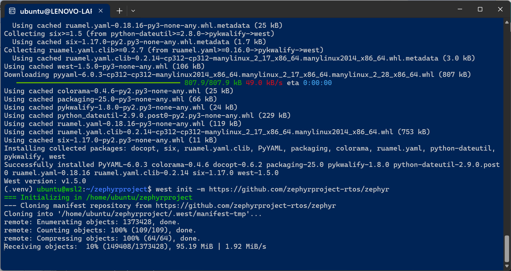
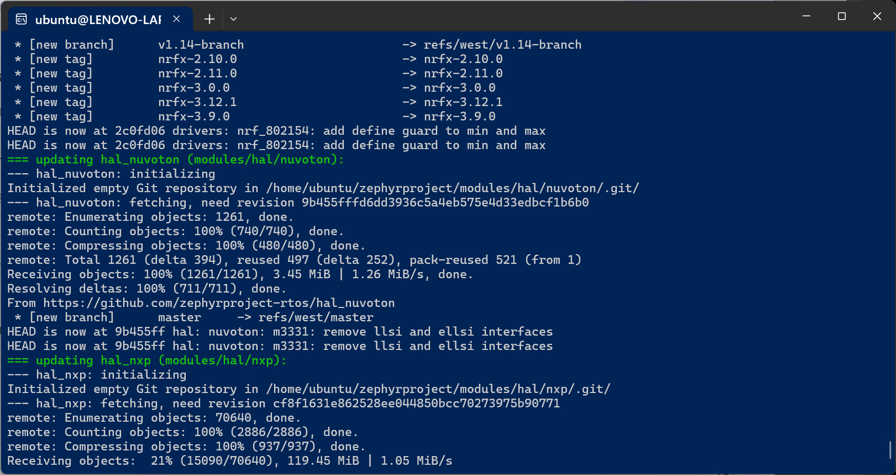
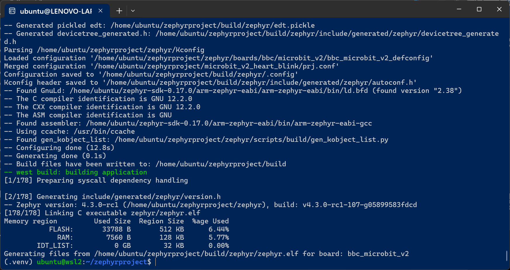
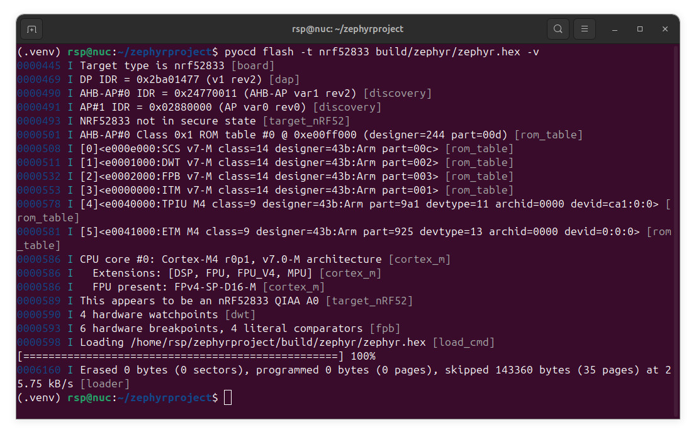
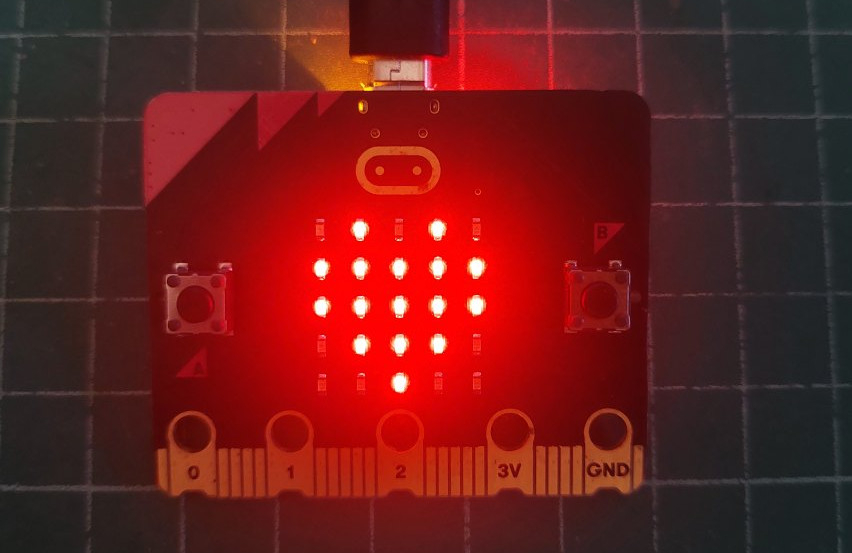
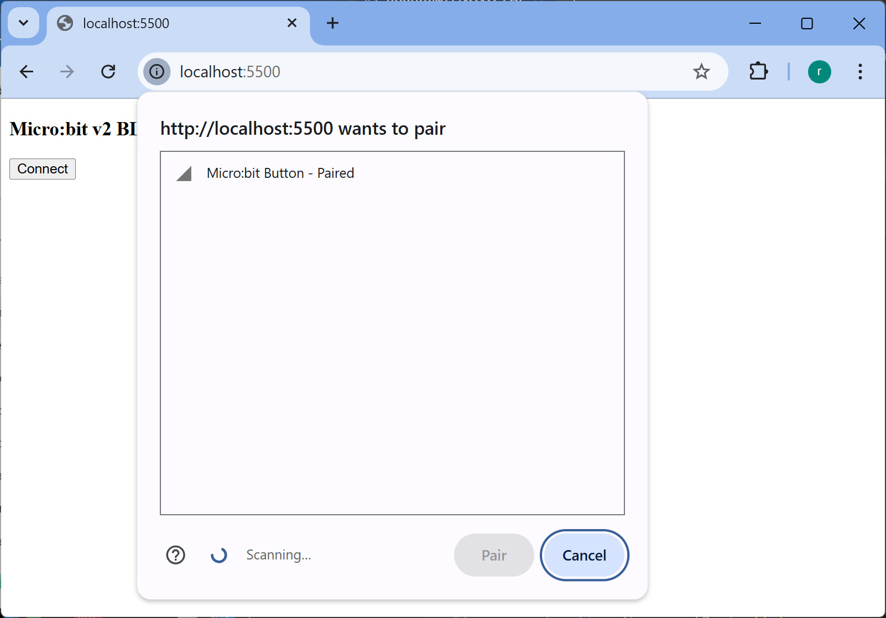
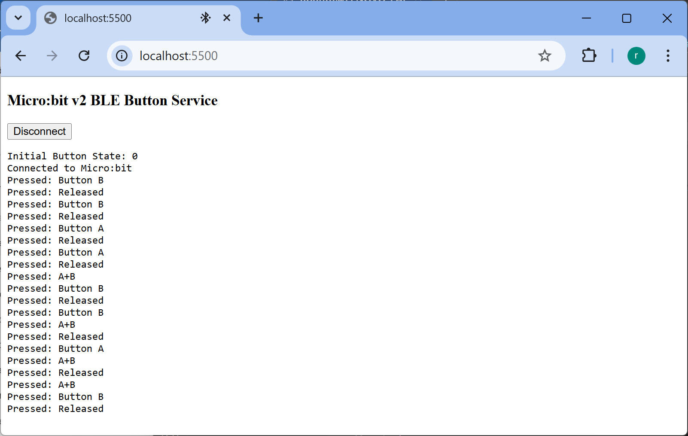

แนะนำการใช้งาน Zephyr RTOS แบบ CLI#
Keywords: Zephyr RTOS, Zephyr West Tool, Zephyr SDK, Micro:bit v2, Raspberry Pi Pico
บทความนี้นำเสนอขั้นตอนการติดตั้งซอฟต์แวร์ Zephyr สำหรับ Ubuntu 24.04 LTS หรืออาจใช้กับ WSL 2 Ubuntu บนระบบปฏิบัติการ Windows ได้เช่นกัน ในขั้นตอนต่อไปนี้ เป็นการติดตั้งและใช้งาน Zephyr RTOS v4.3.0 และ Zephyr SDK v0.17.4
- การติดตั้งซอฟต์แวร์ Zephyr สำหรับ Ubuntu / Linux
- การทดลองใช้ Zephyr ร่วมกับบอร์ด Raspberry Pi Pico
- BBC Micro:bit V2 - Heart Symbol Blinking
- BBC Micro:bit V2 - iBeacon Advertising
- BBC Micro:bit V2 - BLE Button Service
▷ การติดตั้งซอฟต์แวร์ Zephyr สำหรับ Ubuntu / Linux#
แม้ว่าในปัจจุบัน การเขียนโค้ดสำหรับไมโครคอนโทรลเลอร์โดยใช้ Zephyr RTOS จะมีตัวเลือก เช่น
การใช้ Zephyr IDE ซึ่งเป็น Extension Pack สำหรับ VS Code IDE แต่การใช้งานซอฟต์แวร์
Zephyr RTOS แบบ CLI (Command Line Interface)
โดยใช้คำสั่ง west (Python-based meta-tool) ก็ถือว่าเป็นวิธีที่สะดวกเช่นกัน
ขั้นตอนการดำเนินการมีดังนี้#
- ติดตั้งเครื่องมือสำหรับการสร้างโปรแกรม (build tools) ไลบรารี และ Python dependencies
เช่น
git,cmake,ninja-build,python3-devเป็นต้น - สร้างไดเรกทอรีสำหรับโปรเจกต์ Zephyr โดยใช้ชื่อว่า
~/zephyrprojectเพื่อเก็บโค้ด และ Zephyr Workspace - เข้าไปยังไดเรกทอรีโปรเจกต์
~/zephyrproject - สร้างและเปิดใช้งาน Python virtual environment เพื่อแยกสภาพแวดล้อมของ Python โดยไม่กระทบระบบหลัก และจะต้องเปิดใช้งานด้วยคำสั่ง
source .venv/bin/activate - ติดตั้งโปรแกรม West และตรวจสอบเวอร์ชัน (ลองใช้เวอร์ชัน: v1.5.0)
- เริ่มต้นสร้าง Zephyr Workspace (ใช้คำสั่ง
west init -m <repo_url>) โดยระบุ Zephyr repository และคำสั่งwest updateเพื่อดาวน์โหลดไฟล์จาก GitHub ได้แก่โมดูลต่าง ๆ (Dependencies) สำหรับ Zephyr (ขั้นตอนนี้ใช้เวลาหลายนาที และขึ้นอยู่กับความเร็วอินเทอร์เน็ต) - ทำคำสั่ง
west zephyr-exportเพื่อกำหนดตัวแปร เช่นZEPHYR_BASE - ติดตั้ง Python dependencies สำหรับ build script
- ติดตั้ง Zephyr SDK และ toolchains ที่เกี่ยวข้อง
โดยเจาะจงสถาปัตยกรรมที่ต้องการ เช่น
x86_64,ARM,RISC-V,ESP32เป็นต้น
# 1) Install required packages for Zephyr development .
# (build tools, Python, libraries, etc.)
$ sudo apt install --no-install-recommends git cmake ninja-build gperf \
ccache dfu-util device-tree-compiler wget \
python3-dev python3-venv python3-pip python3-setuptools python3-tk \
xz-utils file make gcc libsdl2-dev libmagic1 \
gcc-multilib g++-multilib
# 2) Create a working directory for Zephyr projects.
$ mkdir ~/zephyrproject
# 3) Change into the Zephyr project directory.
$ cd ~/zephyrproject
# 4) Create a Python virtual environment inside the directory
# and activate the virtual environment.
$ python3 -m venv .venv && source .venv/bin/activate
# 5) Install West, the Zephyr meta-tool, using pip and
# verify the installed version of West.
$ pip3 install west
$ west --version
# Expected example: West version: v1.5.0
# 6) Initialize a Zephyr workspace and specify the repository URL.
$ west init -m https://github.com/zephyrproject-rtos/zephyr
# 7) Fetch all modules specified by the Zephyr manifest.
$ west update
# 8) Set environment variables for Zephyr (e.g., ZEPHYR_BASE)
$ west zephyr-export
# 9) Change into the main Zephyr source directory
# and install Python dependencies required by Zephyr build scripts.
$ cd ~/zephyrproject/zephyr
$ pip3 install -r scripts/requirements.txt
# Check SDK version used by the Zephyr project
# zephyrproject/zephyr/SDK_VERSION => version 0.17.4
# 10) Install Zephyr SDK toolchains
# Option 1: Install Zephyr SDK toolchains for selected architectures.
$ west sdk install --toolchains x86_64-zephyr-elf \
arm-zephyr-eabi aarch64-zephyr-elf riscv64-zephyr-elf
$ west sdk install --toolchains xtensa-espressif_esp32_zephyr-elf \
xtensa-espressif_esp32s3_zephyr-elf
# Option 2: Manual download and installation of Zephyr SDK
$ ZEPHYR_SDK_URL=https://github.com/zephyrproject-rtos/sdk-ng/releases/download
$ ZEPHYR_SDK_URL=${ZEPHYR_SDK_URL}/v0.17.0/zephyr-sdk-0.17.0_linux-x86_64.tar.xz
$ wget $ZEPHYR_SDK_URL
$ tar xvf zephyr-sdk-0.17.0_linux-x86_64.tar.xz
$ zephyr-sdk-0.17.0/setup.sh


รูป: ตัวอย่างการทำขั้นตอนการติดตั้งซอฟต์แวร์สำหรับ Zephyr แบบ CLI
▷ การทดลองใช้ Zephyr ร่วมกับบอร์ด Raspberry Pi Pico#
เมื่อได้ติดตั้งโปรแกรมต่าง ๆ ที่จำเป็นแล้ว ลองคอมไพล์โค้ดของโปรเจกต์ตัวอย่างที่มีอยู่ในไดเรกทอรี
~/zephyrproject/zephyr/samples โดยเลือกใช้บอร์ด เช่น
Raspberry Pi Pico (RP2040) / Pico 2 (RP2350A)
west build --pristineหรือwest build -pใน Zephyr หมายถึงการ ล้างการคอมไพล์เดิมทั้งหมดก่อนแล้วจึงเริ่มสร้างใหม่ตั้งแต่ต้น (Clean Build)west -p autoให้ Zephyr ตัดสินเองว่าควรล้าง build เก่าหรือไม่
# List all supported Zephyr boards (and filter results for pico)
$ west boards | grep rpi_pico
# Expected output:
# rpi_pico
# rpi_pico2
# Build the Zephyr "blinky" sample for the Raspberry Pico 2 board
# (-p: pristine build, -b: specify target board)
$ west build -p -b rpi_pico2/rp2350a/m33 samples/basic/blinky
# Build the Zephyr "blinky" sample for the Raspberry Pico board
# (-p: pristine build, -b: specify target board)
$ west build -p -b rpi_pico samples/basic/blinky
# Copy the compiled .UF2 file to the RPi Pico USB drive
# This will automatically flash the firmware to the board.
# For Ubuntu:
$ cp build/zephyr/zephyr.uf2 /media/$USER/RPI_RP2/
# For WSL2 Ubuntu:
# Create a mount point directory for drive D: inside WSL2
$ sudo mkdir -p /mnt/d
# Mount the Windows D: drive to the created directory (/mnt/d)
# -t drvfs tells WSL to use the Windows file system driver
$ sudo mount -t drvfs D: /mnt/d
# Copy the generated Zephyr .uf2 firmware file to the drive
# to flash it to the Micro:bit board via drag-and-drop
$ cp build/zephyr/zephyr.uf2 /mnt/d/
▷ BBC Micro:bit V2 - Heart Symbol Blinking#
สร้างโปรเจกต์ใหม่ ~/zephyrproject/microbit_v2_heart_blink (Heart Symbol Blinking Demo)
$ cd ~/zephyrproject/
$ mkdir -p microbit_v2_heart_blink
สร้างไฟล์ใหม่ตามโครงสร้างต่อไปนี้
./microbit_v2_heart_blink/
├── CMakeLists.txt
├── prj.conf
└── src
└── main.c
File: ./microbit_v2_heart_blink/CMakeLists.txt
cmake_minimum_required(VERSION 3.20.0)
find_package(Zephyr REQUIRED HINTS $ENV{ZEPHYR_BASE})
project(microbit_v2_heart_blink)
target_sources(app PRIVATE src/main.c)
File: ./microbit_v2_heart_blink/prj.conf
# Configuration file for micro:bit v2 LED matrix display
# -- UART and Console Configuration
# Enable UART console for serial communication
CONFIG_UART_CONSOLE=y
# Redirect stdout to console for printk() output
CONFIG_STDOUT_CONSOLE=y
# -- GPIO Configuration
# Enable GPIO driver (required for LED matrix pins)
CONFIG_GPIO=y
# Enable Nordic nRFx GPIO driver for nRF52833
CONFIG_GPIO_NRFX=y
# -- LED Configuration
# Disable generic LED driver (not needed for matrix)
CONFIG_LED=n
# -- Input Configuration
# Enable input subsystem (may be used by display driver)
CONFIG_INPUT=y
# -- Display Configuration
# Enable display subsystem
CONFIG_DISPLAY=y
# Enable micro:bit specific 5x5 LED matrix driver
CONFIG_MICROBIT_DISPLAY=y
# -- Thread and Stack Configuration
# Set main thread stack size to 1KB
CONFIG_MAIN_STACK_SIZE=1024
# Enable thread names for debugging
CONFIG_THREAD_NAME=y
# -- Timing Configuration
# Enable timing functions for accurate delays
CONFIG_TIMING_FUNCTIONS=y
# -- C Library Configuration
# Disable Newlib C library
CONFIG_NEWLIB_LIBC=n
# Use Picolibc (smaller, more efficient for embedded)
CONFIG_PICOLIBC=y
File: ./microbit_v2_heart_blink/src/main.c
// Blinking Heart Display on micro:bit v2
#include <zephyr/kernel.h>
#include <zephyr/device.h>
#include <zephyr/drivers/gpio.h>
#include <zephyr/display/mb_display.h>
/* Define the heart pattern for 5x5 LED matrix
* 1 = LED on, 0 = LED off
*/
static const struct mb_image heart = MB_IMAGE(
{ 0, 1, 0, 1, 0 },
{ 1, 1, 1, 1, 1 },
{ 1, 1, 1, 1, 1 },
{ 0, 1, 1, 1, 0 },
{ 0, 0, 1, 0, 0 }
);
// Blank image for blink effect
static const struct mb_image blank = MB_IMAGE(
{ 0, 0, 0, 0, 0 },
{ 0, 0, 0, 0, 0 },
{ 0, 0, 0, 0, 0 },
{ 0, 0, 0, 0, 0 },
{ 0, 0, 0, 0, 0 }
);
int main(void)
{
struct mb_display *disp;
printk("micro:bit v2 Heart Blink Starting...\n");
/* Get the mb_display structure */
disp = mb_display_get();
if (disp == NULL) {
printk("Failed to get display\n");
return -1;
}
printk("Display ready!\n");
while (1) {
/* Show heart */
mb_display_image(disp, MB_DISPLAY_MODE_DEFAULT,
SYS_FOREVER_MS, &heart, 1);
k_sleep(K_MSEC(500));
/* Show blank (heart off) */
mb_display_image(disp, MB_DISPLAY_MODE_DEFAULT,
SYS_FOREVER_MS, &blank, 1);
k_sleep(K_MSEC(500));
}
return 0;
}
ตัวอย่างการทำคำสั่งในขั้นตอน Build สำหรับบอร์ด Micro:bit V2 มีดังนี้
# Build the firmware file for Micro:bit V2
$ west build -p auto -b bbc_microbit_v2 ./microbit_v2_heart_blink
คำสั่งสำหรับอัปโหลดไฟล์ Firmware ในกรณีที่ใช้ Ubuntu
# For Ubuntu: Method 1
$ cp build/zephyr/zephyr.bin /media/$USER/MICROBIT/
# For Ubuntu: Method 2
$ pip3 install pyocd
$ west flash --runner pyocd
คำสั่งสำหรับอัปโหลดไฟล์ Firmware ในกรณีที่ใช้ WSL 2 Ubuntu
# For WSL 2 Ubuntu (safer method)
$ powershell.exe -Command \
'Copy-Item -Path "build/zephyr/zephyr.bin" -Destination "D:\"'

รูป: ตัวอย่างการทำคำสั่งในขั้นตอน Build (WSL 2 Ubuntu) สำหรับ Micro:bit V2

รูป: ตัวอย่างการทำคำสั่ง pyocd (Ubuntu)
คำสั่ง west flash --runner pyocd จะเรียกใช้ pyocd เพื่อทำหน้าที่อัปโหลดไฟล์ไปยังบอร์ด
Micro:bit

รูป: บอร์ด Micro:bit v2 แสดงสัญลักษณ์รูปหัวใจ (Heart Symbol)
โค้ดตัวอย่างถัดไป มีการเปลี่ยนแปลงดังนี้
- ทำให้แสดงสัญลักษณ์ Heart กระพริบ โดยใช้ Timer ของ Zephyr RTOS
- มีการตรวจสอบปุ่มกด A และ B หากมีการกดปุ่ม ให้หยุดกระพริบชั่วคราว กดอีกครั้ง ทำให้กระพริบต่อ แต่ถ้ากดปุ่มทั้งสองพร้อมกัน ให้แสดงสัญลักษณ์ทันที
#include <zephyr/kernel.h>
#include <zephyr/device.h>
#include <zephyr/drivers/gpio.h>
#include <zephyr/display/mb_display.h>
#include <zephyr/sys/printk.h>
#include <stdbool.h>
// --- Heart and blank patterns
static const struct mb_image heart = MB_IMAGE(
{0, 1, 0, 1, 0},
{1, 1, 1, 1, 1},
{1, 1, 1, 1, 1},
{0, 1, 1, 1, 0},
{0, 0, 1, 0, 0}
);
static const struct mb_image blank = MB_IMAGE(
{0, 0, 0, 0, 0},
{0, 0, 0, 0, 0},
{0, 0, 0, 0, 0},
{0, 0, 0, 0, 0},
{0, 0, 0, 0, 0}
);
// Display instance
static struct mb_display *disp;
// Timer for blinking heart
static struct k_timer heart_timer;
// State variables
static volatile bool show_heart = true;
static volatile bool paused = false;
// Debounce variables
#define DEBOUNCE_MS 200
static int64_t last_btn_a = 0;
static int64_t last_btn_b = 0;
// Timer handler: toggle heart/blank
static void heart_timer_handler(struct k_timer *timer)
{
if (paused) return;
if (show_heart) {
mb_display_image(disp, MB_DISPLAY_MODE_DEFAULT,
SYS_FOREVER_MS, &heart, 1);
} else {
mb_display_image(disp, MB_DISPLAY_MODE_DEFAULT,
SYS_FOREVER_MS, &blank, 1);
}
show_heart = !show_heart;
}
// GPIO buttons
static const struct gpio_dt_spec btn_a = GPIO_DT_SPEC_GET(DT_ALIAS(sw0), gpios);
static const struct gpio_dt_spec btn_b = GPIO_DT_SPEC_GET(DT_ALIAS(sw1), gpios);
static struct gpio_callback cb_a;
static struct gpio_callback cb_b;
// Button handler: toggle pause/resume or show heart
static void button_pressed(const struct device *dev,
struct gpio_callback *cb,
uint32_t pins)
{
// Get current time
int64_t now = k_uptime_get();
// Check for button A callback
if (cb == &cb_a) {
if (now - last_btn_a < DEBOUNCE_MS) return;
last_btn_a = now;
}
// Check for button B callback
if (cb == &cb_b) {
if (now - last_btn_b < DEBOUNCE_MS) return;
last_btn_b = now;
}
bool a_pressed = gpio_pin_get_dt(&btn_a);
bool b_pressed = gpio_pin_get_dt(&btn_b);
// If both buttons A and B are pressed: show heart immediately
if (a_pressed && b_pressed) {
paused = true; // pause blinking
show_heart = true; // ensure heart is on
mb_display_image(disp, MB_DISPLAY_MODE_DEFAULT,
SYS_FOREVER_MS, &heart, 1);
printk("Buttons A+B pressed\n");
return;
}
// Single button toggles pause/resume
const char *button_name = NULL;
if (a_pressed) button_name = "A";
else if (b_pressed) button_name = "B";
else return;
paused = !paused;
if (paused) {
mb_display_image(disp, MB_DISPLAY_MODE_DEFAULT,
SYS_FOREVER_MS, &blank, 1);
printk("Button %s pressed => Blinking paused\n", button_name);
} else {
printk("Button %s pressed => Blinking resumed\n", button_name);
}
}
int main(void)
{
printk("Micro:bit v2 Heart Blink\n");
disp = mb_display_get();
if (!disp) {
printk("Failed to get display\n");
return -1;
}
// Initialize buttons
if (!device_is_ready(btn_a.port) || !device_is_ready(btn_b.port)) {
printk("Button GPIO not ready\n");
return -1;
}
gpio_pin_configure_dt(&btn_a, GPIO_INPUT);
gpio_pin_configure_dt(&btn_b, GPIO_INPUT);
gpio_pin_interrupt_configure_dt(&btn_a, GPIO_INT_EDGE_TO_ACTIVE);
gpio_pin_interrupt_configure_dt(&btn_b, GPIO_INT_EDGE_TO_ACTIVE);
gpio_init_callback(&cb_a, button_pressed, BIT(btn_a.pin));
gpio_add_callback(btn_a.port, &cb_a);
gpio_init_callback(&cb_b, button_pressed, BIT(btn_b.pin));
gpio_add_callback(btn_b.port, &cb_b);
// Initialize timer: interval = 100ms
k_timer_init(&heart_timer, heart_timer_handler, NULL);
k_timer_start(&heart_timer, K_MSEC(0), K_MSEC(100));
// Main loop free for other tasks
while (1) {
k_sleep(K_MSEC(1000));
}
return 0;
}
▷ BBC Micro:bit V2 - iBeacon Advertising#
สร้างโปรเจกต์ใหม่ ~/zephyrproject/microbit_v2_beacon (iBeacon Advertising Demo)
เพื่อสาธิตการส่งสัญญาณ Beacon โดยมีชื่ออุปกรณ์ที่ตรวจสอบและมองเห็นได้เป็น "BBC microbit v2"
$ cd ~/zephyrproject/
$ mkdir -p microbit_v2_beacon
สร้างไฟล์ใหม่ตามโครงสร้างต่อไปนี้
./microbit_v2_beacon/
├── CMakeLists.txt
├── prj.conf
└── src
└── main.c
File: ./microbit_v2_beacon/CMakeLists.txt
cmake_minimum_required(VERSION 3.20.0)
find_package(Zephyr REQUIRED HINTS $ENV{ZEPHYR_BASE})
project(microbit_v2_beacon)
target_sources(app PRIVATE src/main.c)
File: ./microbit_v2_beacon/prj.conf
# Enable console and printk
CONFIG_PRINTK=y
CONFIG_CONSOLE=y
CONFIG_UART_CONSOLE=y
# Enable Bluetooth
CONFIG_BT=y
CONFIG_BT_PERIPHERAL=y
CONFIG_BT_BROADCASTER=y
CONFIG_BT_EXT_ADV=y
# Optional: enable main thread logging
CONFIG_LOG=y
CONFIG_LOG_DEFAULT_LEVEL=3
File: ./microbit_v2_beacon/src/main.c
#include <zephyr/kernel.h>
#include <zephyr/bluetooth/bluetooth.h>
#include <zephyr/bluetooth/hci.h>
#include <zephyr/sys/byteorder.h>
#include <zephyr/sys/printk.h>
#define DEVICE_NAME "BBC microbit v2"
#define DEVICE_NAME_LEN (sizeof(DEVICE_NAME) - 1)
// iBeacon UUID: 2D7A9F0C-E0E8-4CC9-A71B-A21DB2D034A1
#define IBEACON_UUID 0x2D, 0x7A, 0x9F, 0x0C, \
0xE0, 0xE8, \
0x4C, 0xC9, \
0xA7, 0x1B, \
0xA2, 0x1D, 0xB2, 0xD0, 0x34, 0xA1
#define IBEACON_MAJOR 1
#define IBEACON_MINOR 1
#define IBEACON_RSSI 0xC8 // approx. -56 dBm (Measured power at 1m)
// iBeacon Advertisement Data
// Format: Length, Type, Company ID (Little Endian),
// iBeacon Type, UUID, Major, Minor, TX Power
static uint8_t ibeacon_data[] = {
0x02, 0x01, 0x06, // Flags: LE General Discoverable, BR/EDR Not Supported
0x1A, 0xFF, // Length 26, Manufacturer Specific Data
0x4C, 0x00, // Company ID: Apple (0x004C in little endian)
0x02, // iBeacon type
0x15, // iBeacon data length (21 bytes)
IBEACON_UUID, // Proximity UUID (16 bytes)
(IBEACON_MAJOR >> 8) & 0xFF,
IBEACON_MAJOR & 0xFF, // Major (2 bytes, big endian)
(IBEACON_MINOR >> 8) & 0xFF,
IBEACON_MINOR & 0xFF, // Minor (2 bytes, big endian)
IBEACON_RSSI // Measured Power (1 byte)
};
// Scan Response Data - Contains the device name
static const struct bt_data scan_rsp[] = {
BT_DATA(BT_DATA_NAME_COMPLETE, DEVICE_NAME, DEVICE_NAME_LEN),
};
// Advertisement Data - Contains iBeacon payload
static const struct bt_data ad[] = {
BT_DATA_BYTES(BT_DATA_FLAGS, BT_LE_AD_GENERAL | BT_LE_AD_NO_BREDR),
BT_DATA(BT_DATA_MANUFACTURER_DATA,
&ibeacon_data[5], sizeof(ibeacon_data) - 5),
};
int main(void)
{
int err;
struct bt_le_adv_param adv_param;
printk("Starting iBeacon for micro:bit v2\n");
// Initialize Bluetooth
err = bt_enable(NULL);
if (err) {
printk("Bluetooth init failed (err %d)\n", err);
return err;
}
printk("Bluetooth initialized\n");
// Configure advertising parameters
// ADV_SCAN_IND: Scannable undirected advertising (non-connectable)
uint16_t ADV_INT_100MS = (uint16_t)(100.0 / 0.625); // 160
adv_param = *BT_LE_ADV_PARAM(
BT_LE_ADV_OPT_USE_IDENTITY,
ADV_INT_100MS, // 100ms min interval
ADV_INT_100MS, // 100ms max interval
NULL // No directed advertising
);
// Start advertising with scan response
err = bt_le_adv_start(&adv_param, ad, ARRAY_SIZE(ad),
scan_rsp, ARRAY_SIZE(scan_rsp));
if (err) {
printk("Advertising failed to start (err %d)\n", err);
return err;
}
printk("iBeacon started successfully\n");
printk("Device name in scan response: %s\n", DEVICE_NAME);
printk("UUID: 2D7A9F0C-E0E8-4CC9-A71B-A21DB2D034A1\n");
printk("Major: %d, Minor: %d\n", IBEACON_MAJOR, IBEACON_MINOR);
while (1) {
k_sleep(K_SECONDS(1));
}
return 0;
}
▷ BBC Micro:bit V2 - BLE Button Service#
สร้างโปรเจกต์ใหม่ ~/zephyrproject/microbit_v2_ble_buttons (BLE Button Service)
เพื่อสาธิตการตรวจสอบสถานะการกดปุ่มบนบอร์ด "BBC microbit v2" และเชื่อมต่อกับ Web App
โดยใช้ Chrome Web Browser ด้วยวิธี Web Bluetooth
$ cd ~/zephyrproject/
$ mkdir -p microbit_v2_ble_buttons
สร้างไฟล์ใหม่ตามโครงสร้างต่อไปนี้
./microbit_v2_ble_buttons/
├── CMakeLists.txt
├── prj.conf
└── src
└── main.c
File: ./microbit_v2_beacon/CMakeLists.txt
cmake_minimum_required(VERSION 3.20.0)
# Set the Zephyr project
find_package(Zephyr REQUIRED HINTS $ENV{ZEPHYR_BASE})
project(microbit_v2_ble_buttons)
# Add source files
target_sources(app PRIVATE src/main.c)
File: ./microbit_v2_beacon/prj.conf
# Enable BLE stack
CONFIG_BT=y
CONFIG_BT_PERIPHERAL=y
CONFIG_BT_DEVICE_NAME="Micro:bit Button"
CONFIG_BT_DEVICE_APPEARANCE=0
CONFIG_BT_GATT_SERVICE_CHANGED=y
CONFIG_BT_GATT_CLIENT=n
CONFIG_BT_MAX_CONN=1
CONFIG_BT_GATT_DYNAMIC_DB=n
# Enable GPIO (buttons)
CONFIG_GPIO=y
# Enable logging and UART
CONFIG_LOG=y
CONFIG_SERIAL=y
CONFIG_CONSOLE=y
CONFIG_PRINTK=y
CONFIG_STDOUT_CONSOLE=y
# Zephyr Kernel
CONFIG_MAIN_STACK_SIZE=1024
CONFIG_SYSTEM_WORKQUEUE_STACK_SIZE=1024
File: ./microbit_v2_beacon/src/main.c
#include <zephyr/kernel.h>
#include <zephyr/device.h>
#include <zephyr/devicetree.h>
#include <zephyr/drivers/gpio.h>
#include <zephyr/bluetooth/bluetooth.h>
#include <zephyr/bluetooth/conn.h>
#include <zephyr/bluetooth/gatt.h>
#include <zephyr/logging/log.h>
LOG_MODULE_REGISTER(main, LOG_LEVEL_INF);
/* GPIO setup for Button A and B */
#define BUTTON_A_NODE DT_ALIAS(sw0)
#define BUTTON_B_NODE DT_ALIAS(sw1)
static const struct gpio_dt_spec button_a
= GPIO_DT_SPEC_GET(BUTTON_A_NODE, gpios);
static const struct gpio_dt_spec button_b
= GPIO_DT_SPEC_GET(BUTTON_B_NODE, gpios);
/* Connection tracking */
static struct bt_conn *current_conn = NULL;
static bool notify_enabled = false;
/* GATT Characteristic for Button State */
static uint8_t button_value = 0;
/* Custom UUIDs */
#define BT_UUID_BUTTON_SERVICE_VAL \
BT_UUID_128_ENCODE(0x12345678, 0x1234, 0x5678, 0x1234, 0x56789abcdef0)
#define BT_UUID_BUTTON_CHAR_VAL \
BT_UUID_128_ENCODE(0x12345678, 0x1234, 0x5678, 0x1234, 0x56789abcdef1)
static struct bt_uuid_128 button_service_uuid
= BT_UUID_INIT_128(BT_UUID_BUTTON_SERVICE_VAL);
static struct bt_uuid_128 button_char_uuid
= BT_UUID_INIT_128(BT_UUID_BUTTON_CHAR_VAL);
/* GATT Callbacks */
static ssize_t read_button_state(
struct bt_conn *conn,
const struct bt_gatt_attr *attr,
void *buf, uint16_t len, uint16_t offset)
{
const uint8_t *value = attr->user_data;
return bt_gatt_attr_read(conn, attr, buf, len, offset,
value, sizeof(*value));
}
static void button_ccc_cfg_changed(
const struct bt_gatt_attr *attr, uint16_t value)
{
notify_enabled = (value == BT_GATT_CCC_NOTIFY);
LOG_INF("Notifications %s", notify_enabled ? "enabled" : "disabled");
}
/* GATT Service Definition */
BT_GATT_SERVICE_DEFINE(button_svc,
BT_GATT_PRIMARY_SERVICE(&button_service_uuid),
BT_GATT_CHARACTERISTIC(&button_char_uuid.uuid,
BT_GATT_CHRC_READ | BT_GATT_CHRC_NOTIFY,
BT_GATT_PERM_READ,
read_button_state, NULL, &button_value),
BT_GATT_CCC(button_ccc_cfg_changed,
BT_GATT_PERM_READ | BT_GATT_PERM_WRITE),
);
/* Advertising data (global for reuse) */
static const struct bt_data ad[] = {
BT_DATA_BYTES(BT_DATA_FLAGS, (BT_LE_AD_GENERAL | BT_LE_AD_NO_BREDR)),
BT_DATA_BYTES(BT_DATA_UUID128_ALL,
0xf0,0xde,0xbc,0x9a,0x78,0x56,0x34,0x12,
0x78,0x56,0x34,0x12,0x78,0x56,0x34,0x12),
};
static const struct bt_data sd[] = {
BT_DATA(BT_DATA_NAME_COMPLETE, CONFIG_BT_DEVICE_NAME,
sizeof(CONFIG_BT_DEVICE_NAME) - 1),
};
/* Forward declaration for delayed advertising restart */
static void adv_restart_work(struct k_work *work);
K_WORK_DELAYABLE_DEFINE(adv_restart, adv_restart_work);
/* Advertising restart handler */
static void adv_restart_work(struct k_work *work)
{
int err = bt_le_adv_start(BT_LE_ADV_CONN_FAST_2, ad, ARRAY_SIZE(ad),
sd, ARRAY_SIZE(sd));
if (err) {
LOG_ERR("Retry advertising failed (err %d)", err);
k_work_schedule(&adv_restart, K_SECONDS(2)); // retry again later
} else {
LOG_INF("Advertising restarted after delay");
}
}
/* Connection Callbacks */
static void connected(struct bt_conn *conn, uint8_t err)
{
char addr[BT_ADDR_LE_STR_LEN];
if (err) {
LOG_ERR("Connection failed (err %u)", err);
return;
}
bt_addr_le_to_str(bt_conn_get_dst(conn), addr, sizeof(addr));
LOG_INF("Connected: %s", addr);
current_conn = bt_conn_ref(conn);
/* Stop advertising while connected */
bt_le_adv_stop();
}
static void disconnected(struct bt_conn *conn, uint8_t reason)
{
char addr[BT_ADDR_LE_STR_LEN];
bt_addr_le_to_str(bt_conn_get_dst(conn), addr, sizeof(addr));
LOG_INF("Disconnected: %s (reason %u)", addr, reason);
if (current_conn) {
bt_conn_unref(current_conn);
current_conn = NULL;
}
notify_enabled = false;
/* Try to restart advertising immediately, else schedule retry */
int err = bt_le_adv_start(BT_LE_ADV_CONN_FAST_2, ad, ARRAY_SIZE(ad),
sd, ARRAY_SIZE(sd));
if (err) {
LOG_ERR("Failed to restart adv (err %d). Retry in 2s", err);
k_work_schedule(&adv_restart, K_SECONDS(2));
} else {
LOG_INF("Advertising restarted");
}
}
BT_CONN_CB_DEFINE(conn_callbacks) = {
.connected = connected,
.disconnected = disconnected,
};
/* Polling Thread for buttons */
K_THREAD_STACK_DEFINE(button_thread_stack, 1024);
struct k_thread button_thread_data;
void button_poll_thread(void *p1, void *p2, void *p3)
{
uint8_t last_value = 0;
while (1) {
bool a_pressed = gpio_pin_get_dt(&button_a);
bool b_pressed = gpio_pin_get_dt(&button_b);
uint8_t new_value = 0;
if (a_pressed && b_pressed) {
new_value = 3; // A + B pressed
} else if (a_pressed) {
new_value = 1; // A pressed
} else if (b_pressed) {
new_value = 2; // B pressed
}
if (new_value != last_value) {
button_value = new_value;
last_value = new_value;
if (current_conn && notify_enabled) {
int err = bt_gatt_notify(current_conn,
&button_svc.attrs[2],
&button_value,
sizeof(button_value));
if (err) {
LOG_ERR("Notify failed (err %d)", err);
}
}
const char *msg = "";
switch (new_value) {
case 0: msg = "No button pressed"; break;
case 1: msg = "Button A pressed"; break;
case 2: msg = "Button B pressed"; break;
case 3: msg = "A + B pressed"; break;
}
LOG_INF("%s", msg);
printk("%s\n", msg);
}
k_msleep(25); // Poll every 25 ms
}
}
int main(void)
{
int err;
LOG_INF("Starting Micro:bit v2 BLE Button Service");
if (!gpio_is_ready_dt(&button_a) || !gpio_is_ready_dt(&button_b)) {
LOG_ERR("Button GPIOs not ready");
return -ENODEV;
}
err = gpio_pin_configure_dt(&button_a, GPIO_INPUT);
if (err) return err;
err = gpio_pin_configure_dt(&button_b, GPIO_INPUT);
if (err) return err;
/* Initialize Bluetooth */
err = bt_enable(NULL);
if (err) {
LOG_ERR("Bluetooth init failed (err %d)", err);
return err;
}
LOG_INF("Bluetooth initialized");
/* Start initial advertising */
err = bt_le_adv_start(BT_LE_ADV_CONN_FAST_2, ad, ARRAY_SIZE(ad),
sd, ARRAY_SIZE(sd));
if (err) {
LOG_ERR("Advertising failed to start (err %d)", err);
return err;
}
LOG_INF("Advertising started. Waiting for connection...");
/* Start polling thread */
k_thread_create(&button_thread_data, button_thread_stack,
K_THREAD_STACK_SIZEOF(button_thread_stack),
button_poll_thread, NULL, NULL, NULL,
5, 0, K_NO_WAIT);
return 0;
}
ตัวอย่าง Web App สำหรับทดสอบการเชื่อมต่อกับอุปกรณ์ Micro:bit v2
(ชื่ออุปกรณ์ Micro:bit Button)
เพื่อตรวจสอบการกดปุ่มบนบอร์ด และแสดงสถานะบนหน้าเว็บ โดยใช้ Chrome Web Browser
File: index.html
<!DOCTYPE html>
<html>
<body>
<h3>Micro:bit v2 BLE Button Service</h3>
<button id="connect">Connect</button>
<pre id="log"></pre>
<script>
const log = document.getElementById("log");
const btn = document.getElementById("connect");
let device, server, buttonChar, connected = false;
const SERVICE_UUID = '12345678-1234-5678-1234-56789abcdef0';
const CHAR_UUID = '12345678-1234-5678-1234-56789abcdef1';
function logLine(msg) {
log.textContent += msg + "\n";
log.scrollTop = log.scrollHeight;
}
async function connectDevice(dev = null) {
try {
log.textContent = "";
device = dev || await navigator.bluetooth.requestDevice({
filters: [{ name: 'Micro:bit Button' }],
optionalServices: [SERVICE_UUID],
});
device.addEventListener('gattserverdisconnected', tryReconnect);
server = await device.gatt.connect();
const service = await server.getPrimaryService(SERVICE_UUID);
buttonChar = await service.getCharacteristic(CHAR_UUID);
const v = await buttonChar.readValue();
logLine("Initial Button State: " + v.getUint8(0));
await buttonChar.startNotifications();
buttonChar.addEventListener('characteristicvaluechanged', e => {
const val = e.target.value.getUint8(0);
const msg = ["Released", "Button A", "Button B", "A+B"][val] || val;
logLine("Pressed: " + msg);
});
logLine("Connected to Micro:bit");
btn.textContent = "Disconnect";
connected = true;
} catch (err) {
console.log( err );
btn.textContent = "Connect";
}
}
async function disconnectDevice() {
if (device?.gatt?.connected) {
device.gatt.disconnect();
logLine("Device disconnected");
connected = false;
}
btn.textContent = "Connect";
}
async function tryReconnect() {
logLine("Device disconnected — trying to reconnect...");
btn.textContent = "Reconnecting...";
try {
if (device && device.gatt.connected === false) {
await connectDevice(device);
}
} catch {
logLine("Reconnect failed. Please press Connect.");
btn.textContent = "Connect";
}
}
btn.onclick = async () => {
if (device?.gatt?.connected) await disconnectDevice();
else await connectDevice();
};
// Auto-reconnect to known devices after reload
if (navigator.bluetooth.getDevices) {
navigator.bluetooth.getDevices().then(devices => {
const d = devices.find(d => d.name === "Micro:bit Button");
if (d) {
logLine("Reconnecting to saved device...");
connectDevice(d);
}
});
}
</script>
</body>
</html>

รูป: การเชื่อมต่อกับอุปกรณ์ Micro:bit v2 โดยใช้ BLE

รูป: การแสดงสถานะของปุ่มกดบนบอร์ด Micro:bit v2 บนหน้าเว็บ เมื่อมีการเชื่อมต่อได้สำเร็จแล้ว
This work is licensed under a Creative Commons Attribution-ShareAlike 4.0 International License.
Created: 2025-10-29 | Last Updated: 2025-10-31